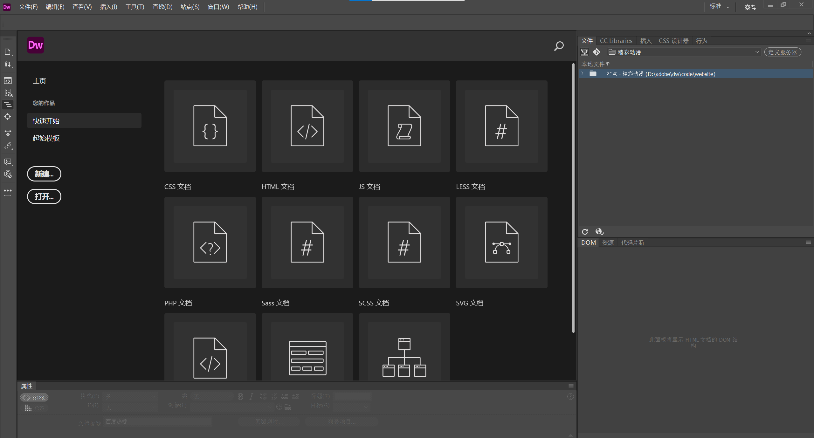
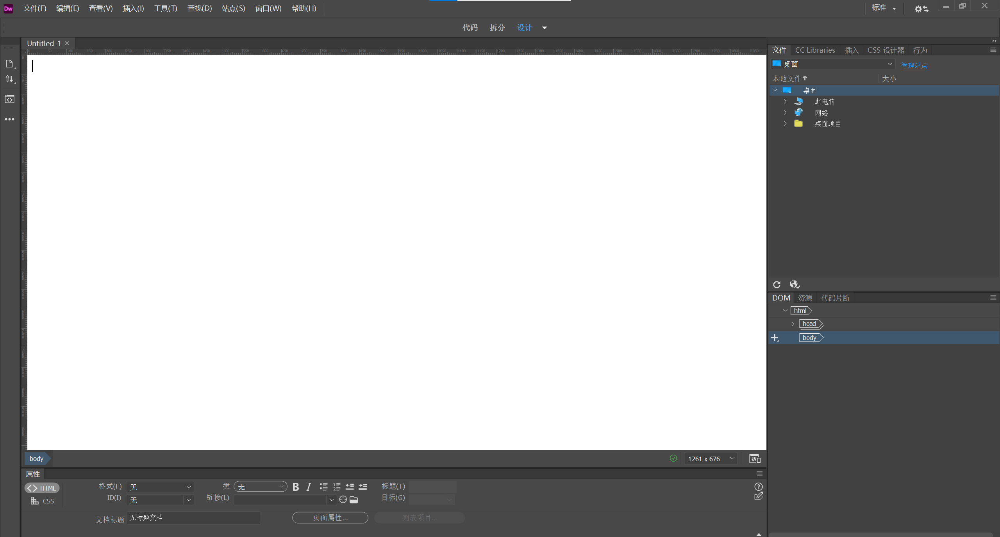
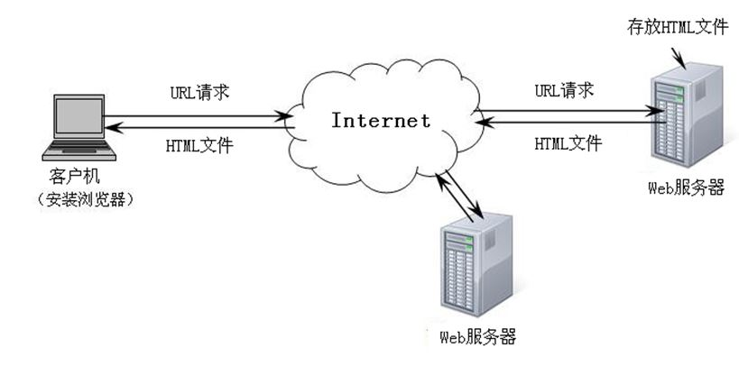
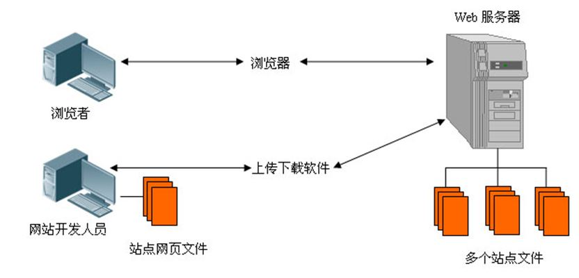
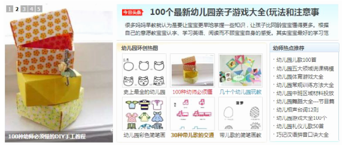
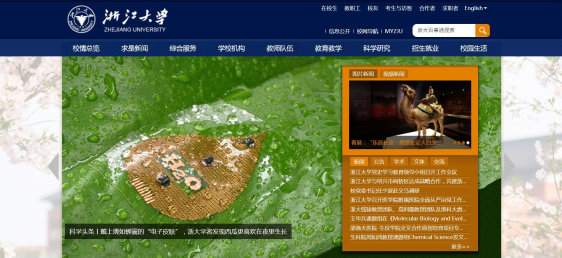
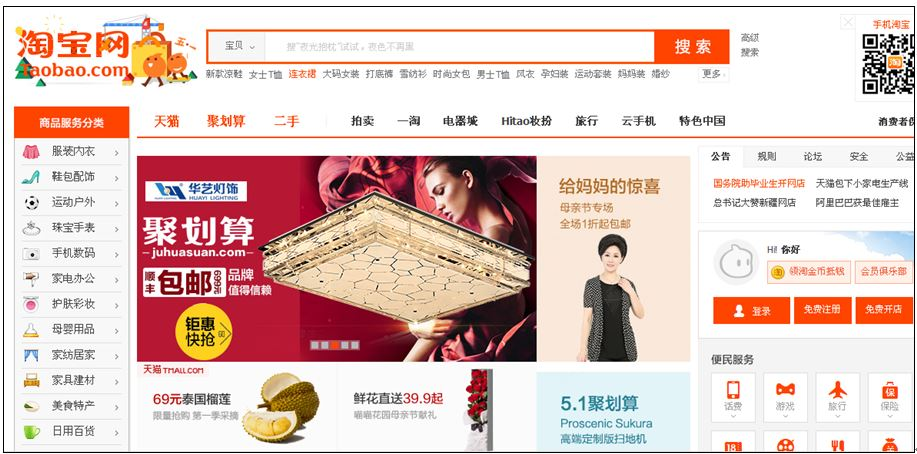
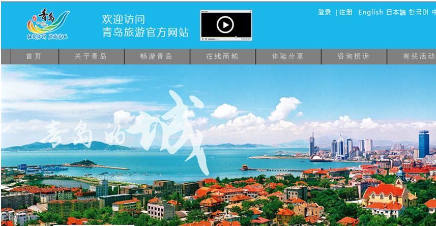

模块二 认识Dreamweaver的工作界面
认识Dreamweaver的工作界面
1.1 Dreamweaver的工作界面
- DW工作界面由菜单栏、工具栏、面板组、状态栏、属性面板、文档窗口等组成，如图所示。
- 在开始界面中，选择“新建”栏中的“HTML”选项，打开Dreamweaver的工作界面，如图所示。

WWW服务
- WWW 是 World Wide Web的缩写，其含义是“全球网”，也称其为“万维网”。WWW是一种基于HTTP（超文本传输协议）的交互式多媒体信息检索工具。使用WWW，只需单击就可以在Internet上浏览各种信息资源。
- WWW服务采用客户机/服务器工作模式，由WWW浏览器、Web服务器和WWW协议组成。WWW的信息资源以网页的形式存储在Web服务器中，用户通过客户端的浏览器，向Web服务器发出URL请求，Web服务器接收并处理用户请求后，将网页返回给客户端，浏览器接收到网页后对其进行解释，最终将文字、图片、声音、动画、影视并茂的画面呈现给用户。
-

WWW服务的工作流程
- WWW浏览器是专门来定位和访问Web信息的应用程序。常用的浏览器软件包括Microsoft公司的Internet Explorer和Netscape公司的Navigator。
- Web服务器是对浏览器的请求提供服务的计算机及其相应的服务程序。网页设计者将制作好的网站上传到Web服务器上才能被用户浏览。
Web站点和网页
- Web站点，又称为网站，是指在因特网上，根据一定的规则，使用HTML等工具制作的用于展示特定内容的相关网页的集合。简单地说，Web站点是一种通讯工具，人们可以通过网站来发布自己想要公开的资讯，或者利用Web站点来提供相关的网络服务，浏览者可以通过网页浏览器来访问Web网站，获取需要的资讯或者享受网络服务，其运作原理如图所示。
-

web站点运作原理
- 网页是构成网站的基本元素，一般又称作HTML文档，是一种可以在互联网上传输，能被浏览器识别和翻译成页面并显示出来的文件。通常我们看到的网页，都是以 htm 或 html 为扩展名的文件，这些网页称为静态网页。
- 根据采用服务器技术的不同，网页扩展名又有ASP、PHP、JSP等，这些网页称为动态网页。在浏览器的地址栏中输入网站的URL（统一资源定位符，也称为网址）后见到的第一个网页称为网站的主页，主页是网站中所有网页的索引页，通过单击主页上的超链接可以打开其他的网页。
HTTP和URL
- HTTP (超文本传输协议)是互联网上应用最广泛的一种网络协议，允许将 HTML 文档 从 Web 服务器传送到 WWW 浏览器。
- Internet 中的 Web 服务器数量众多，并且每台服务器都包含多个网页，用户想在众多网 页中指明要获得的网页， 就必须借助 URL (Uniform Resource Locators，统一资源定位符) 进行资源定位。 URL 由四部分组成： 协议、主机名、路径及文件名， 例如， 某网页的 URL 为：
- https://www.hxedu.com.cn/hxedu/hg/home/home.html
- 其中，“http”是采用的协议，“www.hxedu.com.cn ”是主机名，“hxedu/hg/home/”是网页其中，“http”是采用的协议，“www.hxedu.com.cn ”是主机名，“hxedu/hg/home/”是网页。
1.2网站配色方案
色彩的基础知识
- 色彩是网站中最主要的组成部分，网站页面的色彩处理得好，可以锦上添花，达到事半功倍的效果。色彩一般分为无彩色和有彩色两大类。无彩色是指黑、灰、白等不带颜色的色彩，有彩色是指红、黄、蓝等带有颜色的色彩。
-
（1）色彩的三要素
色相：指色彩的相貌，也就是各种颜色之间的区别，是色彩最显著的特征。
明度：指色彩本身的明暗深浅程度，简单来说就是指色彩的程度。
纯度：指色彩本身的鲜艳程序，又称为色彩的饱和度。
-
（2）色彩的感觉
红色：是最引人注目的色彩，具有强烈的感染力，象征热情、喜庆、幸福。在色彩配合中常起着主色和重要的调和对比作用，是使用得最多的色。
绿色：是植物是色彩，象征着平静、健康、健全、和谐和安全。
蓝色：使人联想到天空、海洋，给人以爽朗、清凉的感觉，象征着平静、稳定性、和谐、统一、信任。
黄色：给人明朗愉快的感觉，象征着光明、希望、高贵、愉快。
橙色：介于红色与黄色之间，可以营造一种温馨的氛围，象征着温馨、时尚、轻快。
紫色：是一种优雅、高贵、充满灵性并能激发创造力的颜色，象征着优雅、高贵、神秘、忧郁。
白色：给人以干净整洁的感觉，象征着纯洁、天真、干净、轻松、神圣。
黑色：是一种比较经典的色彩，象征着严肃、神秘、威严、深沉、压抑。
灰色：是一种可以衬托任何色彩的颜色，象征温和、谦让、平凡、考究。
色彩的搭配原则
- （1）网页色彩搭配时，要善用单色、对比色、邻近色和同类色。
- （2）网页要用与众不同的色彩，不同类型的网站配以不同的色彩，从而表达不同的情感诉求。
- （3）色彩要和网站的内容、文化氛围相符合，以便更好突出网站的特色。
- （4）网页配色时，尽量把颜色控制在三种之内，以免使页面产生“乱”的效果。
常见的配色方案
- （1）儿童类网站：常运用幸福感强烈、充满温情、智慧和希望的黄色；干净、清澈的蓝色；渲染朝气、健康、自然的绿色；营造温馨氛围，活泼、朝气的橙色。
-

营造温馨氛围的儿童网站
- （2）教育类网站：常运用平静、清澈的蓝色或充满希望的绿色。
-

平静、清澈的蓝色系教育网
- （3）企业类网站：常运用沉稳、冷静、严谨、成熟的冷色调蓝色，给人一种稳定感，使访问者容易建立对网站的信任。
-
沉稳冷静的蓝色系企业网站
- （4）购物类网站：常运用红色、黄色、橙色等暖色调渲染氛围，让浏览者感觉到轻松和愉快。
-

轻松愉快的暖色调购物网站
- （4）旅游休闲类网站：常运用代表大自然、健康和希望的绿色，代表天空、海洋，干净清澈的蓝色。
-

干净清澈的蓝色系旅游网站
1.3网站设计常用软件
网站设计开发软件
- （1）文本编辑器
- 制作网页通常使用HTML语言，HTML文档可以使用多种文本编辑器进行编辑，如记事本、Word、写字板、UltraEdit等。其中，UltraEdit是一套功能最强大的文本编辑器，可以编辑文本、十六进制、ASCII 码，具有 HTML 标签颜色显示、搜寻替换以及无限制的还原功能，但不具备所见即所得功能，适合编辑HTML文档源代码，也称为源代码编辑器。
- （2）Frontpage
- Frontpage是微软公司出品的一款网页制作入门级软件。FrontPage使用方便简单，会用Word就能做网页，所见即所得是其特点，该软件结合了设计、HTML、预览三种显示模式，相对于其他专业设计软件，其功能简单，不适合制作复杂的动态网页，适合于初学者。
- （3）Dreamweaver
- Dreamweaver是由Adobe公司推出一款优秀的网站开发工具，是网页设计师在选择开发工具时一个不错的选择，能更有效地设计、开发和维护基于网站校准化的网站，它集成了众多网站开发中涉及到的最新技术，扩展了页面设计与制作、多媒体开发和动画设计等功能，是当前最为流行的网站设计工具之一。
网页美化工具
- （1）Photoshop
- Photoshop是由Adobe公司开发的一种的图形图像软件，是目前最好的平面设计软件之一，其功能完善、性能稳定、使用方便，是美化网页的常用工具。
- （2）Fireworks
- Fireworks是一款专为网络图形设计的图形编辑软件，它大大简化了网络图形设计的工作难度，无论是专业设计家还是业余爱好者，使用Fireworks都不仅可以轻松地制作出十分动感的GIF动画，还可以轻易地完成大图切割、动态按钮、动态翻转图等。
- （3）Flash
- Flash是专业的矢量图形编辑和动画创作软件，是一种交互式动画设计工具，用它可以将音乐、声效、动画以及富有新意的界面融合在一起，制作出高品质的网页动态效果。